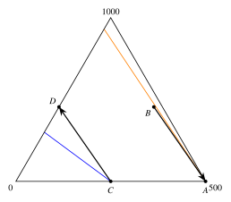

October 27, 2026
These notes document what was covered in the tutorial session, for the benefit of future TAs. They are not intended as study material for students.
Two halves. (i) The Allais paradox, shown to be inconsistent with expected utility in three ways: by cancelling a common component of the lotteries using independence, by writing the two observed preferences as inequalities on the utility index, and on the simplex. (ii) An aside on lexicographic preferences over lotteries, which satisfy independence but not continuity. (iii) Precautionary saving in a two-period model with no discounting and zero interest: no saving without income risk, positive saving under a mean-zero income shock exactly when marginal utility is convex, and the comparative result that a more prudent agent saves more, proved by writing one agent’s marginal utility as a convex transformation of the other’s.
The Allais question is from a past problem set, with prizes 1000, 500 and 0. The precautionary-saving material is from a past midterm, whose last part is the comparison of prudent agents. The two figures at the end are reference sketches.
The session’s methodological thread is the variational argument: to show that an optimum lies to one side of a candidate point, evaluate the first-order condition at the candidate, sign it, and let concavity of the objective do the rest. It appears twice here — once to show that a prudent agent saves a positive amount (candidate: zero saving), once to show that the more prudent of two agents saves more (candidate: the other agent’s optimum) — and it returns in Tutorial 9 for the portfolio problem. It is worth naming it as a method the first time it appears, because students otherwise see three separate tricks.
The second thread is Pratt’s device of comparing two agents by writing one’s utility as a transformation of the other’s. Students will have seen it in lectures for risk aversion. Here it is applied one derivative up, to marginal utility, and the transformation is convex rather than concave. Making that shift explicit is the most useful single thing the second half can do, since it tells students that prudence is to marginal utility what risk aversion is to utility.
Allais: three proofs of one fact. The paradox was done three ways, and the comparison between them is the point. Each answers a slightly different question, and students should be able to say which.
The cancellation argument shows directly that independence fails. As presented it ran through the subtract-and-rescale shortcut from Tutorial 7. As I said in the Tutorial 7 notes, a future TA should instead present it as a mixture identity, which is cleaner here than anywhere: each of the four lotteries is an 89–11 mixture, \(A\) and \(B\) share the common component “500 for sure,” \(C\) and \(D\) share “0 for sure,” and the 11 percent component is the same pair in both comparisons (500 for sure against a lottery paying 1000 with probability \(10/11\) and 0 otherwise). Independence says the common component is irrelevant, so the two observed choices rank the same pair in opposite orders. Said this way there is nothing to subtract and the argument fits in two sentences.
The utility-inequality argument shows that no expected-utility index rationalizes the choices: the two preferences give opposite strict inequalities between the same two expressions. This is what the question actually asks. It is tempting to conclude from it that independence fails, which is a step too far: ruling out an expected-utility representation rules out the conjunction of the vNM axioms, not independence in particular. The cancellation argument is the one that pins the failure on independence.
The simplex argument shows why. The four lotteries form a parallelogram: the step from \(A\) to \(B\) is the same vector as the step from \(C\) to \(D\). Under independence, indifference curves are parallel straight lines, so the preference along a fixed direction has the same sign everywhere in the simplex, and preferring \(A\) to \(B\) forces preferring \(C\) to \(D\). Allais subjects reverse the sign, so their indifference curves must fan out (Figure 1). It is tempting to say that the two indifference curves cross each other, which is not right: crossing would be a failure of transitivity, whereas here the curves are merely non-parallel. “Fanning out” is the phrase from the literature and worth giving students.
Keep the prizes in the order 1000, 500, 0 when labelling the simplex. With the labels reversed the algebra is unaffected, since the contradiction does not care which prize is which, but the example loses its content — \(A\) is then a sure 500 against a lottery that is barely better than nothing, and the “certainty effect” that makes the paradox interesting disappears.
Lexicographic preferences over lotteries. A short aside. Ranking lotteries lexicographically by their probability vectors — first by the probability of the best prize, then the next — gives a preference that satisfies independence, since each comparison is linear in probabilities, but is not continuous. Every indifference set is a single point. This is the cleanest example of why the vNM theorem needs continuity as well as independence, and it is a direct callback to Tutorial 2, where the lexicographic order over goods was the counterexample for the continuity axiom there. A future TA should check whether the current problem set asks it before spending time on it.
No risk, no saving. The baseline problem has equal incomes in both periods and no discounting, and the first-order condition equates marginal utilities across periods. The step students skip is that equal marginal utilities imply equal consumption only because marginal utility is strictly decreasing, hence one-to-one. That uses the strict concavity of the utility index, not merely its concavity, and it is worth saying explicitly because the same injectivity is what licenses Pratt’s transformation later in the session.
Precautionary saving. Adding a mean-zero shock to second-period income, the first-order condition at zero saving compares marginal utility today with expected marginal utility tomorrow, and Jensen’s inequality signs the comparison by the curvature of marginal utility. Convex marginal utility (a positive third derivative) makes expected marginal utility tomorrow exceed marginal utility today, so the first-order condition is positive at zero and the optimum saves. Figure 2 is the picture to draw; it takes a minute and makes “prudence is convexity of \(u'\)” visible.
Two things to state that the board work left implicit. First, the variational step needs the objective to be strictly concave in saving, which it is because the utility index is; without that, a positive derivative at zero says nothing about where the maximum is. Second, the inequality is strict only if the shock is nondegenerate and marginal utility strictly convex. Neither is hard, but these are the conditions the exam answer gets marked down for omitting.
An intuition worth giving: risk aversion is about the curvature of utility and so about expected utility, whereas prudence is about the curvature of marginal utility and so about the first-order condition. An agent can be very risk averse and not at all prudent (quadratic utility), and that example is the quickest way to make the distinction stick.
Comparing prudence. The comparison is between absolute prudence coefficients, the ratio of minus the third derivative to the second. I proved it in two steps, and the structure is the thing to emphasise. First, since both marginal utilities are strictly decreasing, one can be written as an increasing transformation of the other; differentiating that identity twice and rearranging shows that the more prudent agent’s transformation is convex. This is Pratt’s argument verbatim, one derivative higher, and with convex in place of concave, since being more prudent means having more convex marginal utility. Second, evaluate the more prudent agent’s first-order condition at the less prudent agent’s optimum, apply Jensen to the convex transformation, and use the less prudent agent’s own first-order condition to close the chain. The derivative is positive, so the more prudent agent saves more.
The second step is the place students get lost, because three expressions that look alike are in play. A future TA should mark the term that is the less prudent agent’s first-order condition in a matching colour wherever it appears on the board, so that its role in closing the chain is visible. Students also need to be told that the representation of one marginal utility as a transformation of the other is not an assumption — it follows from monotonicity, and that is exactly why the baseline problem made a point of it.
The one step the session did not fully develop is the second-order check that makes the first-order comparison sufficient. A positive derivative at the less prudent agent’s optimum shows the more prudent agent saves more only because the more prudent agent’s objective is concave in saving: its utility index is concave and saving enters both periods’ consumption linearly, so the derivative is decreasing, and a positive value at the candidate puts its zero above the candidate. This is the same concavity the zero-saving step relies on, so it costs one sentence to state, but it should be stated on the board and not left for students to assume. Tutorial 9’s portfolio comparison needs the same check.
On ordering: Allais naturally goes first, since it closes the axiomatic material from Tutorial 7 and uses the simplex while it is fresh, and money lotteries second, since they open the material Tutorial 9 continues. If time is short, cut the lexicographic aside and the second Allais approach, which adds least once the other two are done; do not cut the prudence comparison, since Tutorial 9 reuses its structure for risk aversion and the portfolio problem, and the parallel is much easier to point out if students have just seen it.
